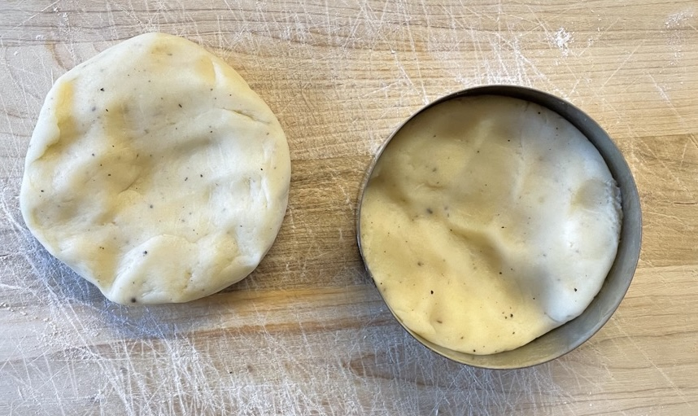
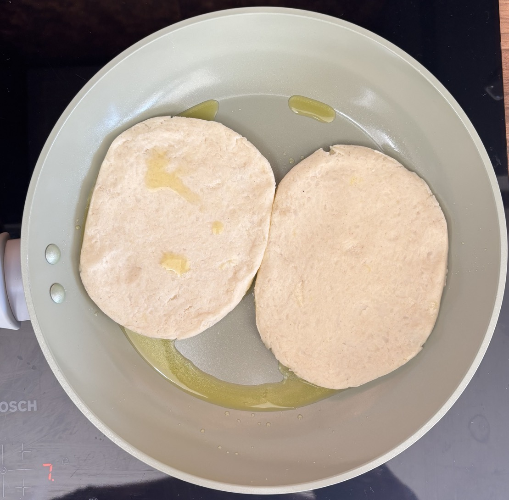

Potato scones
-
- Mash together
- 225g potato cooked
- 20g butter melted
- Mix in
- 60g plain flour
- ½ tsp baking powder
- <¼ tsp salt
- white/black pepper
- Divide dough into 2
- Press each portion into circle with back of spoon
- Roll circles to 1 cm thick
- Fry scones for 5 mins each side
Serving
- Smoked salmon
- Poached egg
- Soured cream / cream cheese & chives / Hollandaise / creme fraiche
- Sauted spinach
- 2 portions
Notes
Pics

